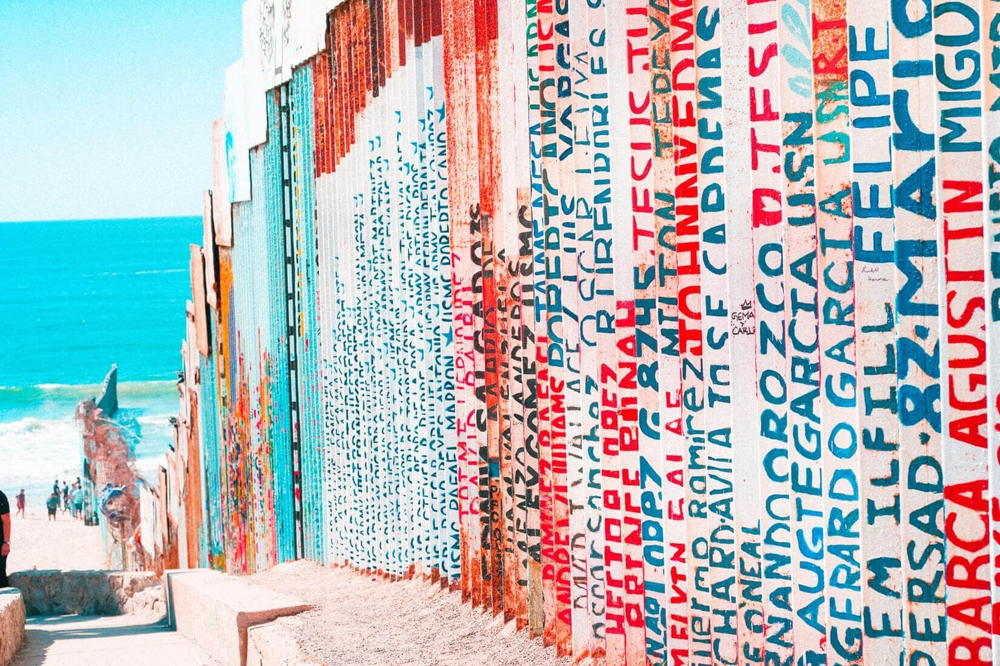
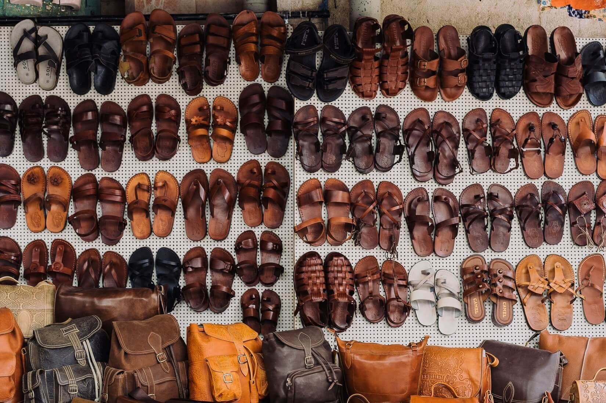

Советы
Я иду искать: что делать, если вещи потерялись в самолёте или аэропорту
Одни люди точно знают про себя, что постоянно всё забывают и теряют. Другие думают: «Чтобы такое со мной? Никогда!»
Да, ровно до первого раза. Неважно, забыли вы на багажной полке пакет из duty free или ноутбук в кармане кресла напротив. Факт: вещь осталась на борту и, возможно, уже улетела в неизвестном направлении. Что делать?
Глупые вопросы о шенгене, которые вы стеснялись задать
Шенгенские визы — как школьная влюблённость. Почти у каждого была хоть одна, но мало кто разбирается, как это вообще работает. Собрали самые стыдные вопросы о шенгене и ответили на них, чтобы вам не позориться на туристических форумах и в фейсбуке.
Ничего не лезет: как легко упаковать обувь в путешествие
Упаковать обувь в чемодан непросто. Она объёмная и тяжёлая, а иногда ещё и грязная. И если с последним недостатком легко справиться, то чтобы нейтрализовать другие два, придётся освоить специальные упаковочные способы, разработанные британскими учёными.
Главное — подсчитать количество пар и выбрать подходящий способ упаковки.
Мы потренировались дома и теперь можем советовать.
Это запрещённая статья: знаменитые мировые сыры и блюда из них
Ребят, хватит закусывать вино «Российским», и не кидайте «Дружбу» в сырный суп.
Мы выделили несколько европейских стран и обозначили их сырный «топ-3». А ещё отметили, что именно попробовать из блюд с этими сырами. Ведь как мы знаем, что? Правильно: сыра много не бывает.
Ой, ошибка: как изменить данные в авиабилете
Бывает так: увидели выгодный авиабилет и бросаемся его покупать, пока акция не закончилась или сайт не рухнул под натиском экономных путешественников. В спешке можно допустить досадную опечатку или вовсе забыть про новую фамилию. Ведь от перспективы улететь в далёкую страну по цене ужина в ресторане голова идёт кругом.
Рассказываем, как избежать ошибок при оформлении авиабилета и что делать, если рука всё-таки дрогнула.